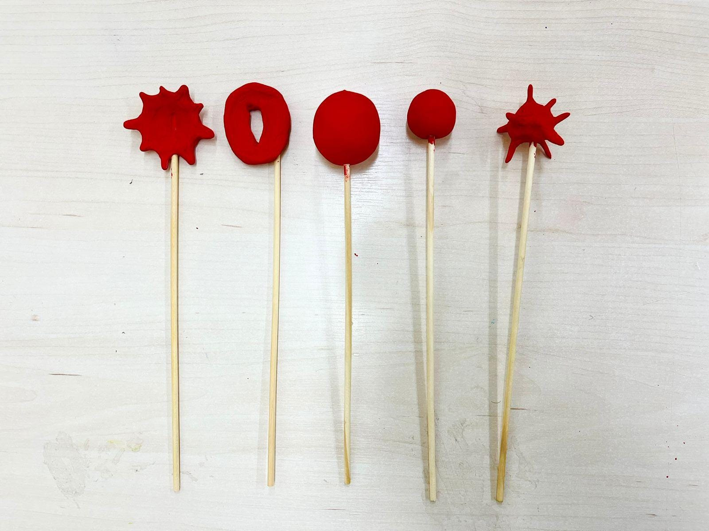
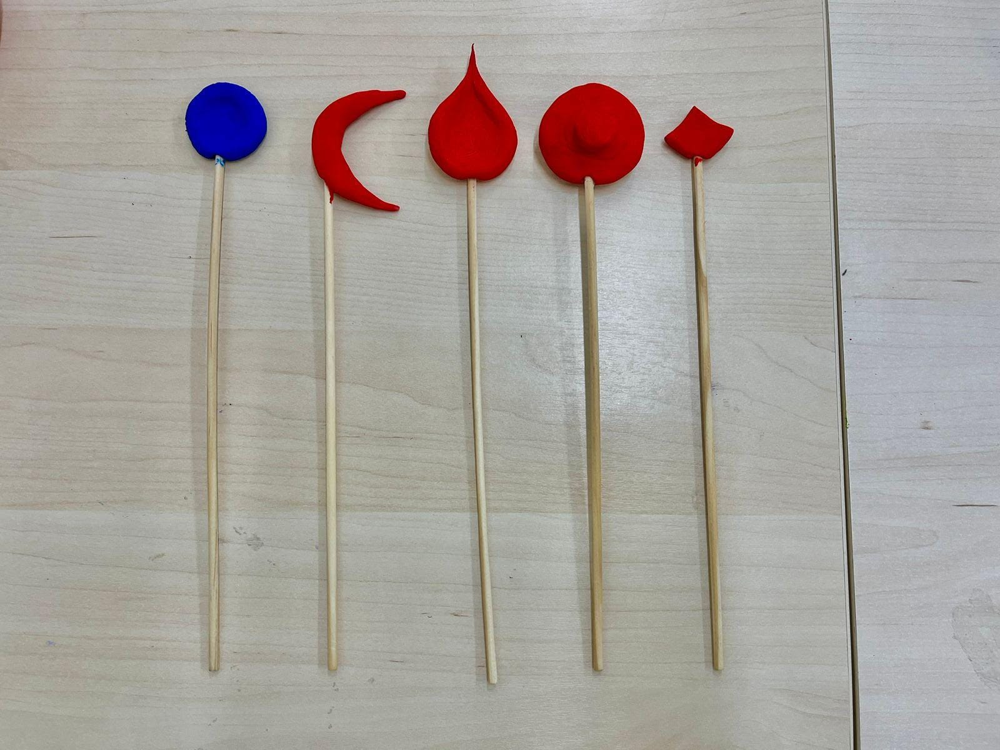

Anemia Ferropiva (Deficiência de Ferro)
Alterações morfológicas nas hemácias - Hipocromia: As hemácias têm menos hemoglobina, o que as torna mais claras no centro, com uma maior área de centralização pálida.
Alterações fisiológicas no corpo humano - Menor capacidade de transporte de oxigênio devido à quantidade reduzida de hemoglobina; causa uma falta de ferro necessária para a síntese de hemoglobina, levando à produção de hemácias deficientes.
Anemia Falciforme (Mutação no Aminoácido)
Alterações morfológicas nas hemácias - Forma em foice: As hemácias assumem uma forma de meia-lua ou foice devido à mutação na hemoglobina (HbS); Anisocitose*: Pode haver uma variação no tamanho das hemácias; Policromasia: Presença de hemácias imaturas (reticulócitos) na circulação, possuem coloração azul-acinzentada.
Alterações fisiológicas no corpo humano - A hemoglobina falciforme, quando desoxigenada, causa a deformação das hemácias, que ficam rígidas e menos flexíveis. Isso resulta em obstrução dos vasos sanguíneos, dor e menor capacidade de transporte de oxigênio.
Anemia Hemolítica Autoimune (condição genética; complicações por infeccções)
Alterações morfológicas nas hemácias - Esferocitose: As hemácias podem ter uma forma esférica, em vez de discoide. Elas também são mais rígidas e vulneráveis à destruição; Anisocitose* e poiquilocitose* (presença de hemácias com formas variadas).
Alterações fisiológicas no corpo humano - O sistema imunológico ataca as próprias hemácias, levando à sua destruição prematura (hemólise). Isso diminui a quantidade de glóbulos vermelhos no sangue, resultando em anemia.
Alterações morfológicas nas hemácias - Estomatocitose: As hemácias apresentam uma abertura central (ou forma de "boca"), com uma parede celular mais fina, ou seja, há uma anomalia na membrana celular. Elas têm um formato oval ou em forma de taça e uma extensa área central de centralização pálida.
Alterações fisiológicas no corpo humano - As hemácias com estomatócitos têm alterações na permeabilidade iônica, o que pode levar a uma maior fragilidade da membrana celular, tornando as hemácias mais suscetíveis à hemólise (destruição prematura). Isso pode causar uma anemia hemolítica crônica.
Talassemia
Alterações morfológicas nas hemácias - Codócito: As hemácias apresentam uma aparência de "alvo", com uma área central pálida (semelhante a um ponto ou círculo), que é cercada por uma linha de cor mais intensa.
Alterações fisiológicas no corpo humano - A talassemia é causada por defeitos genéticos que afetam a produção das cadeias de globina que formam a hemoglobina. Isso leva à produção de hemoglobina anormal ou insuficiente, causando um desequilíbrio entre as cadeias de globina alfa e beta, o que resulta na destruição prematura das hemácias.
Anemia Neuroacantocitose (genético; presente em pacientes com coreia de Huntington e doença de Wilson)
Alterações morfológicas nas hemácias - Acantócito: Hemácias com espículas (projeções irregulares) que geralmente são de tamanhos variados. A forma é irregular, com bordas espiculadas; Equinócitos: Hemácias com projeções regulares e simétricas, em formato de "sol". Diferentemente dos acantócitos, as projeções dos equinócitos são uniformes e podem surgir por alterações metabólicas ou osmóticas.
Alterações fisiológicas no corpo humano - as hemácias com acantócitos ou equinócitos são mais rígidas e propensas à destruição, o que pode levar a uma anemia hemolítica.
Anemia Mielofibrosa (mutações genéticas)
Alterações morfológicas nas hemácias - Dacriocitose: As hemácias têm um formato de gota ou lágrima, com uma extremidade afilada e outra arredondada. Esses tipos de células aparecem em situações de dificuldade na formação das hemácias.
Alterações fisiológicas no corpo humano - Os dacriócitos podem ser indicativos de um aumento na produção de células sanguíneas imaturas devido à fibrose da medula óssea ou outras condições hematológicas; A deformidade das hemácias dificulta a sua passagem pelos vasos sanguíneos mais estreitos e pode contribuir para a hemólise prematura e para a diminuição da capacidade de transporte de oxigênio.
Anemia Microangiopática (adquirida por cânceres, púrpura ou casos específicos de hipertensão arterial)
Alterações morfológicas nas hemácias - Esquizocitose: São fragmentos de hemácias que resultam de rupturas celulares. Eles têm formas irregulares e são frequentemente associados a hemácias fragmentadas.
Alterações fisiológicas no corpo humano - A formação de esquizócitos ocorre devido ao dano mecânico às hemácias nos microvasos, o que leva à hemólise e à redução do número de glóbulos vermelhos. Além disso, a destruição das hemácias prejudica a capacidade do sangue de transportar oxigênio de forma eficiente.
